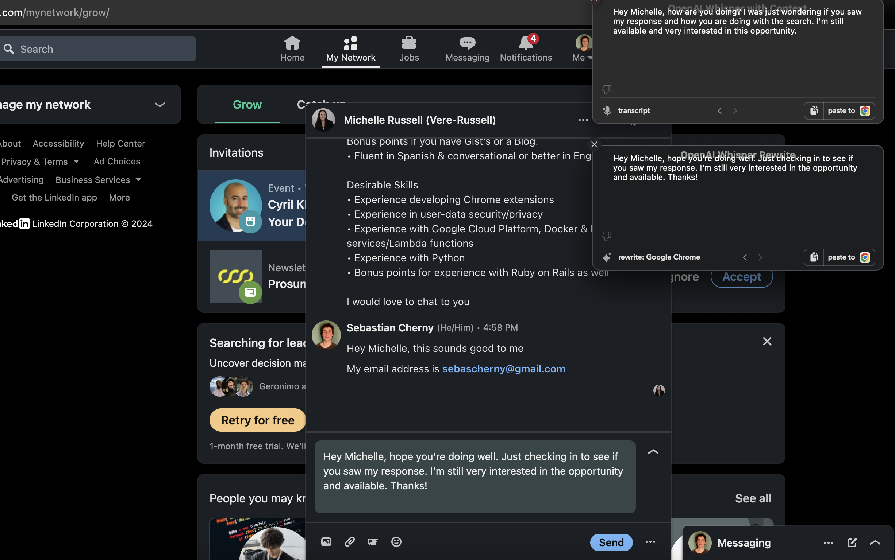
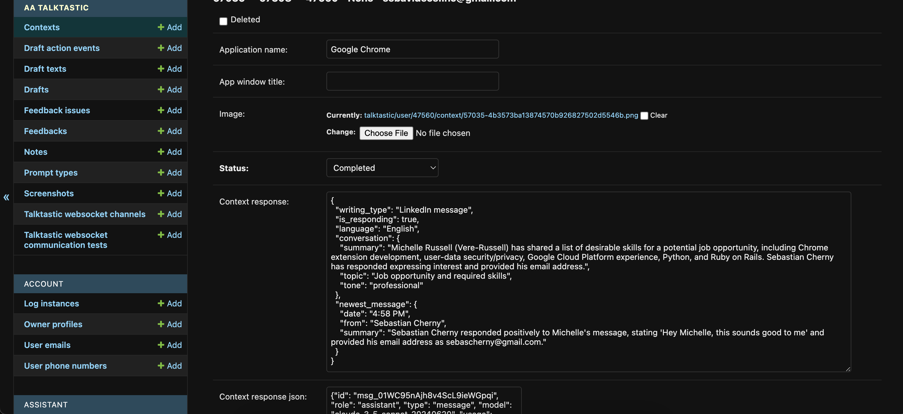

Talktastic App
In this project I built the backend from scratch. The client was building a Mac App that would allow users to run it and talk, and get their audios transcribed. The main interesting thing about this project was that to transcribe the audio, we first took a screenshot of the computer screen, sent it to an AI (Claude) for analysis, and then we sent the transcription together with the screenshot's analysis to another LLM (GPT). This way we could get a more accurate transcription than plain speech-to-text, and even edit it to match the calculated format according to the screen. For example, a common use case was people that sent a lot of Slack messages, we would catch the names to whom the message was being sent, and the previous messages from the conversation, and that way the LLM understood for example if the text should be formal or not, the structure, and spelled correctly even uncommon names that were mentioned in the audio.
Overview
First, users need to register and validate their email.
When a user started recording, the app would take the screenshot and post it to the backend. Then, the backend would send the screenshot to Claude (as a background job, asynchronic), and get the analysis back.
After both the screenshot was analyzed and then recording was finished and posted to the backend (together with Apple's speech-to-text transcription), the backend sent different prompts to different LLM models (generally openai). The prompts were to get the AI to understand the context of the conversation together with the initial transcription, and then return a more accurate transcription.
Websockets were used so that the user could see the transcription in real time.
Backend
Python, Django, DRF, Celery, Websockets, openai sdk
Database
Postgresql
Infra
Docker, Google Cloud Platform, RabbitMQ, Github Actions (test coverage: 89%)
 